<div class="container-fluid" style="padding-left: 0; padding-right: 0">
    <div class="row">
        <div class="parallax-one">
            <div class="center">
                <br /><br /><br /><br /><br /><br /><br /><br /><br />
                <div class="container-fluid">
                    
                    <center><strong style="color: white;font-family: Aria; font-size: 50px;">Find your hole in the wall</strong></center>
                    <center><span class="btn btn-lg btn-warning" style="font-family: Aria;"><span class="glyphicon glyphicon-lock"></span> Sign up</span></center>
                </div>
            </div>
        </div>

        <div style="height: 350px; background-color: white;" class="parallax-center">
            <div>
                <h2>Something we do that yelp doesn't do.<br /><small>Here we will talk about what we do better than our competitors. Hopefully enticing owners and patrons alike. [cool image goes here]</small></h2>
            </div>
            <div>
                <h2>A cool feature that a patron would like.<br /><small>[cool image goes here] Well, we have said feature. Proceed to entrancing patrons into returning to website to take advantage of said feature.</small></h2>
            </div>
            <div>
                <h2>Something bar owners would like.<br /><small>Here we talk about in a short blurb why this is good for them, followed by yet another [cool image]</small></h2>
            </div>
        </div>

        <div class="parallax-two"></div>
    </div>
</div>


